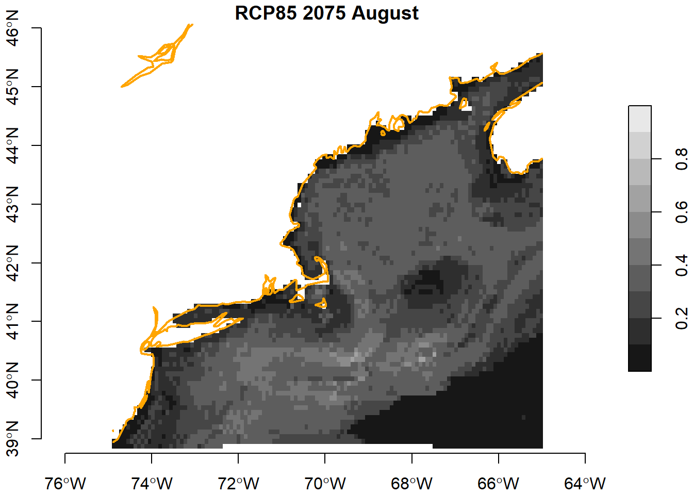
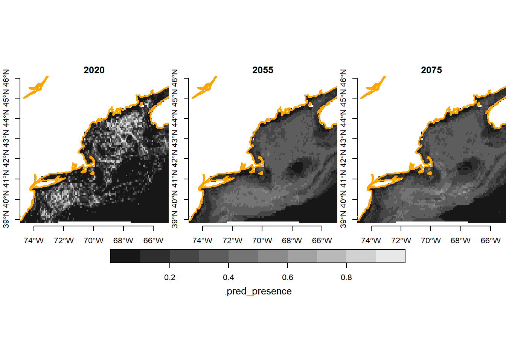

source("setup.R")Prediction
- It’s tough to make predictions, especially about the future.
- Yogi Berra
Finally we come to the end product of forecasting: the prediction. This last step is actually fairly simple, given a recipe and model (now bundled in a workflow container), run the same data-prep and predicting steps as we did earlier. One modification is that we now want to predict across the entire domain of our Brickman data set. You may recall that we are able to read these arrays, display them and extract point data from them. But we haven’t used them en mass as a variable yet.
1 Setup
As always, we start by running our setup function. Start RStudio/R, and reload your project with the menu File > Recent Projects.
2 Load the Brickman data
Once again, we’ll use the August data where we started with a greedy sampling approach. We are going to make a prediction about the present, which means it something akin to a nowcast.
cfg = read_configuration(version = "g_Aug")
db = brickman_database()
covars = read_brickman(db |> filter(scenario == "PRESENT", interval == "mon")) |>
select(all_of(cfg$keep_vars)) |>
slice("month", "Aug") 3 Load the workflow
We read the recipe and model workflow bundle.
wflow = read_workflow(version = cfg$version)Recall that the workflow has two elements: pre-processing recipe and model. When we make a prediction with the workflow it will accept new data that then gets filtered and/or transformed as specified by the recipe steps. The data that survives the preprocessing will then be used to feed into the model that was trained on a specific domain (time and space).
4 Make a prediction
First we shall make a “nowcast” which is just a prediction of the current environmental conditions.
4.1 Nowcast
First make the prediction. The function yields a stars array object that has three attributes: .pred_presence, .pred_background and .pred. The leading dot simply gives us the heads up that these three values are all computed. The first two range from 0-1 which implies a probability. The last, .pred, is the class label we would assign if we accept that any .pred_presence >= 0.5 should be considered suitable habitat where a reported observation might occur.
nowcast = predict_stars(wflow, covars)
nowcaststars object with 2 dimensions and 3 attributes
attribute(s):
.pred_presence .pred_background .pred
Min. :0.000 Min. :0.000 presence : 602
1st Qu.:0.032 1st Qu.:0.750 background:5184
Median :0.094 Median :0.906 NA's :4983
Mean :0.183 Mean :0.817
3rd Qu.:0.250 3rd Qu.:0.968
Max. :1.000 Max. :1.000
NA's :4983 NA's :4983
dimension(s):
from to offset delta refsys point x/y
x 1 121 -74.93 0.08226 WGS 84 FALSE [x]
y 1 89 46.08 -0.08226 WGS 84 FALSE [y]Now we can plot what is often called a “habitat suitability index” (hsi) map.
coast = read_coastline()
plot(nowcast['.pred_presence'], main = "Nowcast August",
axes = TRUE, breaks = seq(0, 1, by = 0.1), reset = FALSE)
plot(coast, col = "orange", lwd = 2, add = TRUE)
We can also plot a presence/background labeled map, but keep in mind it is just a thresholded version of the above where “presence” means .pred_presence >= 0.5.
plot(nowcast['.pred'], main = "Nowcast August Labels",
axes = TRUE, reset = FALSE)
plot(coast, col = "black", lwd = 2, add = TRUE)
4.2 Forecast
Now let’s try our hand at forecasting - let’s try RCP85 in 2075. First we load those parameters, then run the prediction and plot.
covars_rcp85_2075 = read_brickman(db |> filter(scenario == "RCP85", year == 2075, interval == "mon")) |>
select(all_of(cfg$keep_vars)) |>
slice("month", "Aug") forecast_2075 = predict_stars(wflow, covars_rcp85_2075)
forecast_2075stars object with 2 dimensions and 3 attributes
attribute(s):
.pred_presence .pred_background .pred
Min. :0.000 Min. :0.328 presence : 41
1st Qu.:0.147 1st Qu.:0.684 background:5745
Median :0.268 Median :0.732 NA's :4983
Mean :0.235 Mean :0.765
3rd Qu.:0.316 3rd Qu.:0.853
Max. :0.672 Max. :1.000
NA's :4983 NA's :4983
dimension(s):
from to offset delta refsys point x/y
x 1 121 -74.93 0.08226 WGS 84 FALSE [x]
y 1 89 46.08 -0.08226 WGS 84 FALSE [y]coast = read_coastline()
plot(forecast_2075['.pred_presence'], main = "RCP85 2075 August",
axes = TRUE, breaks = seq(0, 1, by = 0.1), reset = FALSE)
plot(coast, col = "orange", lwd = 2, add = TRUE)
Hmmm, that’s pretty different than what the nowcast predicts.
5 Time series
It would be nice to see a time series: current, 2055 and 2075 on the same graphic. Let’s load RCP85 2055 data, and make yet another prediction.
5.1 Forecast 2055
covars_rcp85_2055 = read_brickman(db |> filter(scenario == "RCP85", year == 2055, interval == "mon")) |>
select(all_of(cfg$keep_vars)) |>
slice("month", "Aug")
forecast_2055 = predict_stars(wflow, covars_rcp85_2055)
forecast_2055stars object with 2 dimensions and 3 attributes
attribute(s):
.pred_presence .pred_background .pred
Min. :0.000 Min. :0.435 presence : 19
1st Qu.:0.131 1st Qu.:0.682 background:5767
Median :0.270 Median :0.730 NA's :4983
Mean :0.233 Mean :0.767
3rd Qu.:0.318 3rd Qu.:0.869
Max. :0.565 Max. :1.000
NA's :4983 NA's :4983
dimension(s):
from to offset delta refsys point x/y
x 1 121 -74.93 0.08226 WGS 84 FALSE [x]
y 1 89 46.08 -0.08226 WGS 84 FALSE [y]5.2 Bind time series
We want to bind the .pred_presence attribute for each of the predictions (nowcast, forecast_2055 and forecast_2075). Let’s assume the “present” mean 2020 so we can assign a year.
rcp85 = c(nowcast, forecast_2055, forecast_2075, along = list(year = c("2020", "2055", "2075")))
Note
Curious about we provide year as a vector of characters instead of a vector of integers? Try running the command above again and check out the 3rd dimension.
Since we are plotting multiple arrays, we need to plot the coastline using a “hook” function.
plot_coast = function(){
plot(coast, col = "orange", lwd = 2, add = TRUE)
}
plot(rcp85['.pred_presence'],
hook = plot_coast,
axes = TRUE, breaks = seq(0, 1, by = 0.1), join_zlim = TRUE, reset = FALSE)
Hmmmm. Why does there seem to be a strong shift between 2020 and 2055, while the 2055 to 2075 shift seems less pronounced?
Note
Don’t forget that there are other ways to plot array based spatial data.
5.3 Save the predictions
We could save all three attributes, but .pred_background is just 1 - .pred_presence, and .pred is just coding “presence” where .pred_presence >= 0.5, so we can always compute those as needed if we have .pred_presence. In that case, let’s just save the first attribute, .pred_presence, in a multilayer GeoTIFF formatted image array file. The write_prediction() function will do just that.
# make sure the output directory exists
path = data_path("predictions")
if (!dir.exists(path)) ok = dir.create(path, recursive = TRUE)
# write individual arrays?
write_prediction(nowcast, file = file.path(path,"g_Aug_RCP85_2020.tif"))
write_prediction(forecast_2055, file = file.path(path, "g_Aug_RCP85_2055.tif"))
write_prediction(forecast_2075, file = file.path(path, "g_Aug_RCP85_2075.tif"))
# or write them together in a "multi-layer" file?
write_prediction(rcp85, file = file.path(path, "g_Aug_RCP85_all.tif"))To read it back simply provide the filename to read_prediction(). If you are reading back a multi-layer array, be sure to check out the time argument to assign values to the time dimension. Single layer arrays don’t have the concept of time.
6 Recap
We made both a nowcast and a number predictions using a previously saved workflow. Contrary to Yogi Berra’s claim, it’s actually pretty easy to predict the future. Perhaps more challenging is to interpret the prediction. We bundled these together to make time series plots, and we saved the .pred_presence values.